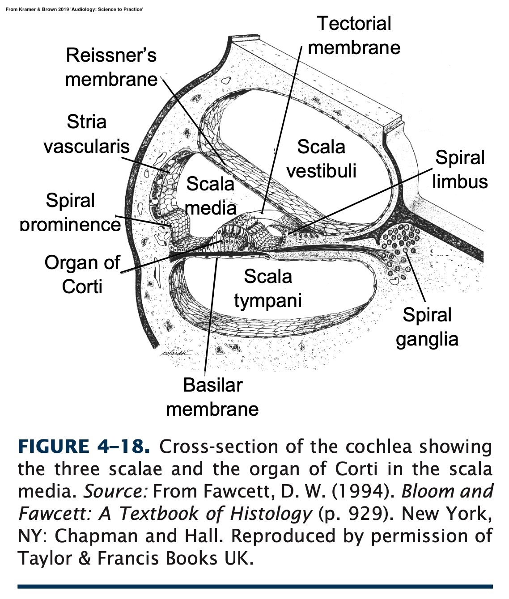
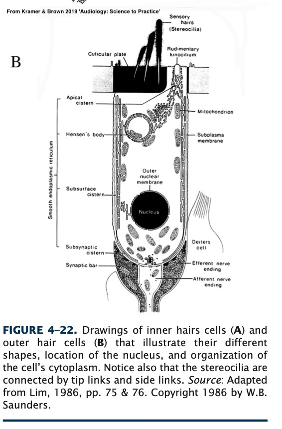
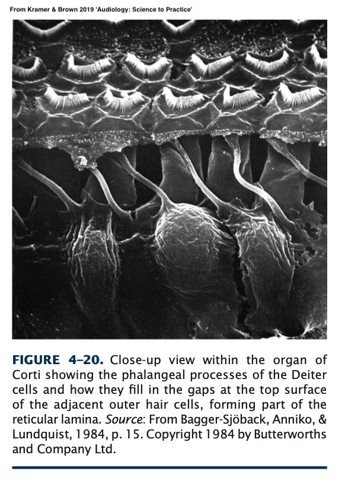
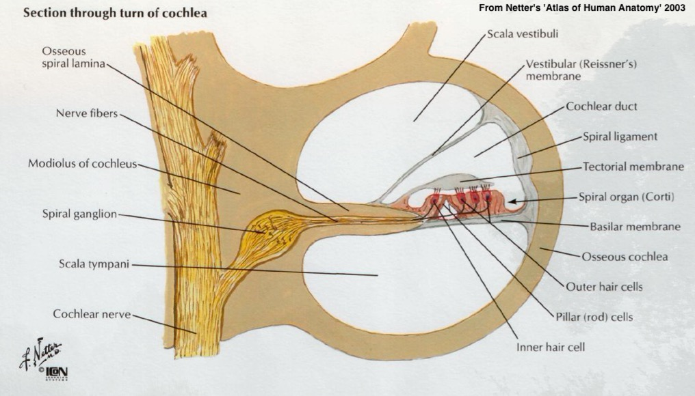

# The Anatomy of the Organ of Corti Will Styler - LIGN 113 --- ### Today's Plan - The Organ of Corti - The Journey of Sound --- <img class="r-stretch" src="hearing/outerear.jpg"> --- <img class="r-stretch" src="hearing/bony_labyrinth_withcochlea.jpg"> ---  --- ### The Basilar membrane moves with sound - Tonotopically! <img class="r-stretch" src="hearing/cochlea_unrolled_wave.jpg"> --- ### Vibration doesn't matter unless we can detect it - We need to 'transduce' the sound from kinetic energy to electrical energy - That's the role of the organ of corti! --- --- ### The Organ of Corti Functions - *Amplify* sound further - *Transduce* sound from kinetic to electric energy - *Transmit* that energy to the brain --- ### Structures within the Organ of Corti <img class="r-stretch" src="hearing/corti_crosssection.jpg"> --- ### The structures we care about - Dieter and Hensen Cells - Tectorial Membrane - The Stria Vascularis - Outer Hair Cells (OHCs) - Inner Hair Cells (IHCs) - 8th Nerve --- ### Deiter's ('Phalangeal') Cells - Provide structural support for the OHCs - Not super interesting! <img src="hearing/corti_crosssection.jpg"> --- ### Hensen's Cells - These have some small physiological roles - They show promise for future research, but we mostly don't care <img src="hearing/corti_crosssection.jpg"> --- ### The Stria Vascularis --- ### The Stria Vascularis - Produces Endolymph - Has specific cells dedicated to transporting K+ ions into the endolymph - More on this later - This is amazingly important --- ### The Tectorial Membrane <img class="r-stretch" src="hearing/corti_crosssection.jpg"> --- ## The Tectorial Membrane - Surprisingly poorly understood --- ### "Wait, why don't we understand how this works?!" - The Cochlea is a little tiny structure - Embedded in bone - Inside a human's head - Godspeed, researchers --- ### The Tectorial Membrane - [Seems to play a role in frequency specification and amplification](https://www.ncbi.nlm.nih.gov/pmc/articles/PMC2856508/) - Not a great thing when it's missing - Outer hair cell tips are inside the tectorial membrane - ... but not inner hair cells --- ### Only the tips of the OHCs are embedded in the Tectorial Membrane! <img class="r-stretch" src="hearing/corti_crosssection.jpg"> --- ## The Outer Hair Cells <img class="r-stretch" src="hearing/corti_crosssection.jpg"> --- ### Outer Hair Cells - The Outer Hair cells help to *amplify* motion of the basilar membrane - The cell's length shifts in harmony with the sound - Preferentially amplifies quiet sounds ---  ---  --- <img class="r-stretch" src="hearing/corti_top.jpg"> --- ### The Outer Hair Cells form the 'cochlear amplifier' - They're connected to the tectorial membrane - They help us a *lot* in hearing --- ## The Inner Hair Cells <img class="r-stretch" src="hearing/corti_crosssection.jpg"> --- ### Inner Hair Cells - Inner hair cells transduce vibration into electric potential - These are a *crucial* element of the chain --- <img class="r-stretch" src="hearing/hair_ihc.jpg"> --- <img class="r-stretch" src="hearing/corti_top.jpg"> --- ### Inner Hair Cells are the last link! - They turn basilar membrane vibrations into nerve signals - We'll talk about how in physiology! --- ### Inner hair cells are directly (and richly!) connected to the nervous system - IHCs are connected to the Spiral Ganglion - They transmit a train of pulses down the nerves --- <img class="r-stretch" src="hearing/corti_innervation.jpg"> --- ### The Sprial Ganglion connects to the cochlear nerve <img class="r-stretch" src="hearing/cochlea_section_nerve.jpg"> ---  --- ## The Cochlear Nerve - Also known as the 'Eighth Cranial nerve' or the 'Auditory Nerve' - Splits off from the 'Vestibulocochlear Nerve' --- <img class="r-stretch" src="hearing/outerear.jpg"> --- ### The Vestibulocochlear Nerve connects to the Pons <img class="tall" src="hearing/brain_inferior.jpg"> --- ### ... and finally, sound has reached the brain! - In a format it can understand - The rest is physiological awesomeness --- ## The Journey of Sound --- <img class="r-stretch" src="hearing/outerear.jpg"> --- <img class="r-stretch" src="hearing/middleear_netter.jpg"> --- <img class="r-stretch" src="hearing/bony_labyrinth_withcochlea.jpg"> --- --- <img class="r-stretch" src="hearing/corti_crosssection.jpg"> --- --- ### A few teaser questions - "Wait, how do hair cells on top of a membrane trigger nerve firings?" - "If nerves only send pulses, how do we capture gradient changes in amplitude?" - "Why do chemicals which build up in the stria vascularis lead to **profound** hearing loss?" - "Wait, how the heck do you replace the entire organ of corti with an implanted device?" - ... and how do you install it!?! - **All this and more, later in LIGN 113!** --- ### Next time - It's on to sound! --- <huge>Thank you!</huge>